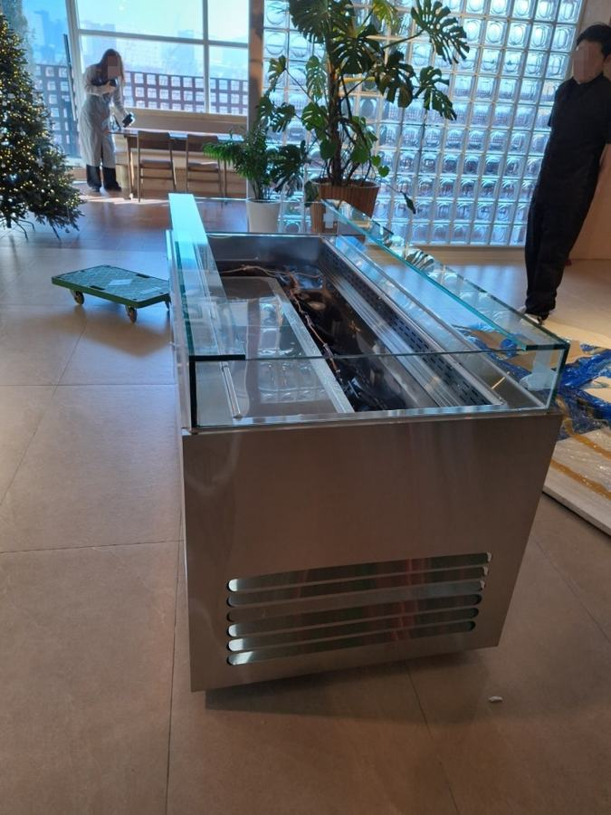
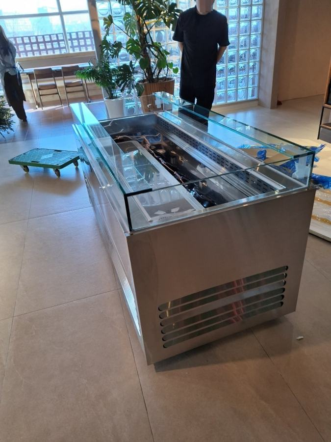
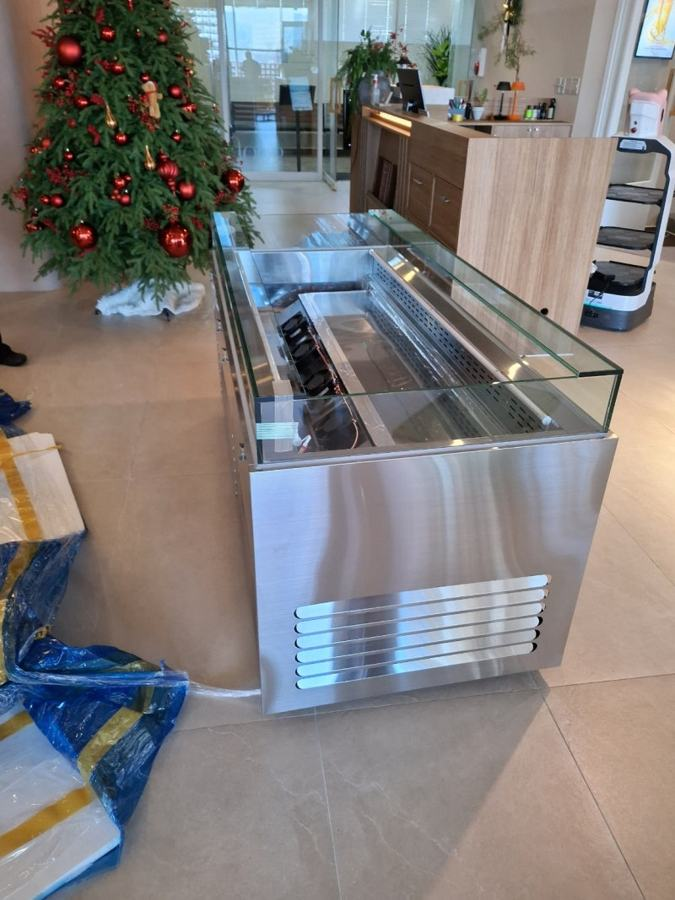
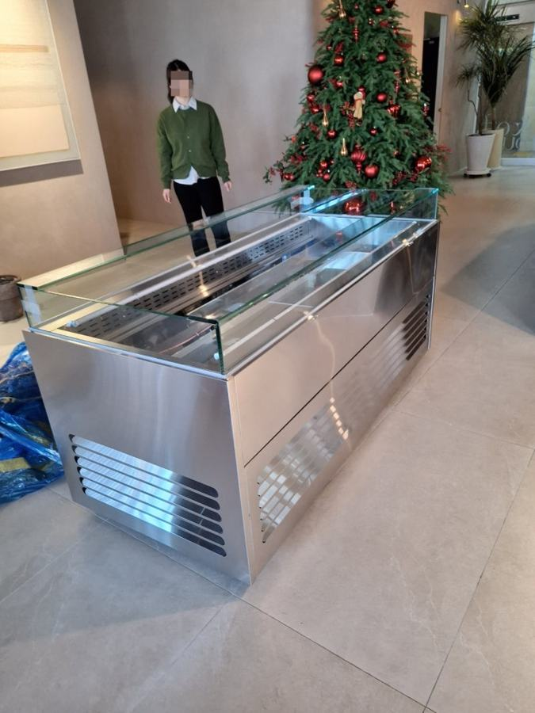
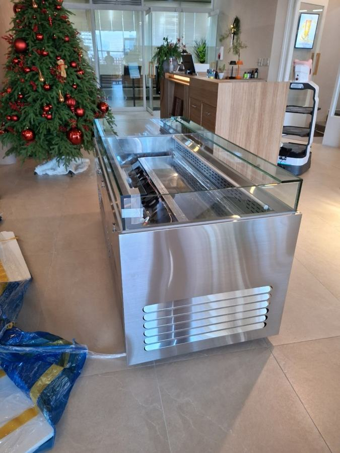
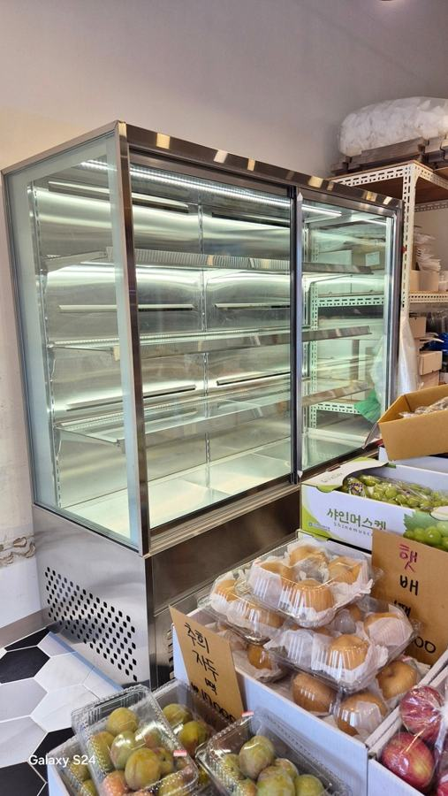
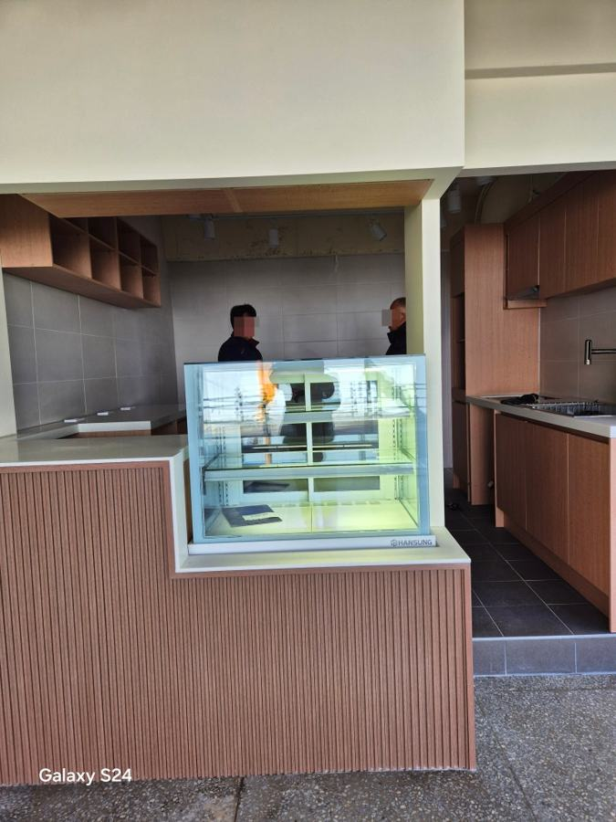

과일진열쇼케이스
과일가게 전기요금, 평대·과일쇼케이스에서 새는 냉기 잡는 법

과일가게는 과일을 수북이 쌓아 냉기 토출구를 가리고, 과일에서 나온 수분이 성에로 쌓이면서 장비가 쉬지 못해 전기가 많이 나갑니다. 진열 높이 제한선과 POP 위치를 정하고, 제상 주기와 배수 상태를 관리하며, 기계실 통풍만 챙겨도 부담이 눈에 띄게 줄어듭니다.
안녕하세요. 과일가게와 청과 코너에 들어가는 진열 냉장고를 만드는 한성쇼케이스입니다.
과일가게 사장님들께 전기요금 이야기를 꺼내면 대부분 한숨부터 쉬십니다. 여름엔 수박과 복숭아, 겨울엔 딸기와 귤까지 계절마다 냉장 진열이 늘어나니 고지서가 줄어들 틈이 없죠.
그런데 과일가게는 장비 자체보다 쓰는 방식에서 전기가 새는 경우가 많습니다. 과일을 풍성하게 보이려고 높이 쌓고, 행사 가격표를 크게 붙이는 바로 그 습관이 냉기 흐름을 막고 성에를 키웁니다.
오늘은 과일 평대와 과일쇼케이스에서 전기가 새는 지점과, 진열 효과는 지키면서 부담을 덜어 내는 방법을 정리해 드리겠습니다.
1. 수북한 진열이 냉기 길을 막습니다
과일은 쌓아 놓을수록 풍성해 보이니 평대 위로 박스째 올리거나 고깔처럼 높이 쌓는 매장이 많습니다. 하지만 냉장 평대는 정해진 라인 위로 냉기가 흐르도록 설계돼 있어, 그보다 높이 쌓인 과일은 냉기가 닿지 않고 아래쪽은 냉기가 갇혀 돌지 못합니다.
결국 위쪽 과일은 미지근해지고 장비는 온도를 맞추려고 계속 돌아갑니다. 평대 가장자리에 높이 제한선을 정해 두고, 위쪽은 보여 주는 용도로 얇게, 재고는 아래나 창고에 두고 보충하는 방식이 전기와 신선도 모두에 유리합니다.
- 평대 진열 높이 제한선 정하기
- 냉기 토출구·흡입구 앞 비우기
- 재고는 쌓지 말고 수시 보충
2. 행사 POP가 통풍구를 가리지 않게
제철 과일 행사 때는 가격표와 POP를 크게 붙이게 됩니다. 이 보드가 평대 앞면이나 토출구를 덮으면 냉기 흐름이 끊겨 그 칸 온도가 오릅니다.
POP는 손님 눈높이에 걸고, 폭은 냉기가 흐를 틈을 남기는 크기로 제한해 주세요.
회전이 빠른 행사 과일은 앞쪽 위에, 천천히 나가는 과일은 옆이나 아래쪽에 두면 손님이 오래 뒤적이는 시간이 줄어 냉기 손실도 덜합니다.


3. 과일 수분이 성에를 키웁니다
과일은 따고 난 뒤에도 숨을 쉬며 수분을 내보냅니다. 세척한 과일을 물기째 올리거나, 습한 박스를 그대로 넣으면 쇼케이스 안 습도가 높아지고 냉각 코일에 성에가 빨리 쌓입니다.
성에가 두꺼워지면 냉기가 약해지고 장비는 더 오래 돌아야 합니다.
자동 제상 기능이 있어도 주기가 매장과 맞지 않으면 소용이 덜합니다. 손님이 몰리는 시간을 피해 새벽이나 마감 전후로 제상이 돌도록 맞추고, 제상 뒤 물이 잘 빠지는지 배수구를 확인하세요.
과일 꼭지나 잎 조각이 배수구를 막는 일이 잦습니다.
- 물기 뺀 과일만 진열
- 제상 시간은 피크 시간 피해서
- 배수구 이물질 주기적 제거
4. 자리와 기계실 관리
과일가게는 출입문을 활짝 열어 두고 장사하는 경우가 많아, 입구 쪽 평대는 바깥 열기와 햇빛을 그대로 받습니다.
가능하면 냉장 평대는 직사광선이 덜 드는 안쪽에 두고, 입구 쪽에는 상온 보관이 가능한 과일을 배치해 보세요.
평대 하부 기계실 앞에 빈 박스를 쌓아 두는 것도 흔한 습관입니다. 통풍구가 막히면 열이 빠지지 못해 콤프레셔가 쉬지 못하니, 기계실 앞은 늘 비워 두고 그릴 먼지를 정기적으로 털어 주세요.
체크리스트
- 평대 진열 높이 제한선
- POP 위치와 크기
- 물기 뺀 과일 진열
- 제상 주기와 배수구 상태
- 기계실 앞 박스 치우기
현장에서 자주 보는 경우: 성에 긁다 지치는 여름 매장
여름만 되면 성에 긁다가 아르바이트생이 그만뒀다는 말이 농담처럼 오갑니다. 매장 온도가 오르고 뚜껑과 문을 여닫는 횟수가 늘면 냉장 장비 안팎에 서리가 더 빨리 끼고, 항상 열려 있는 냉장평대는 상품을 위에서 바로 꺼내 가는 구조라 관리가 소홀해지기 쉽습니다.
원문에서는 제상을 제때 하지 않으면 온도가 오르고 전기요금이 늘며 직원 피로까지 커진다고 짚었습니다.
자동 제상은 피크 시간을 피해 매장 상황에 맞춰 하루 1~4회 범위에서 간격을 조정하고, 제상 직후에는 문 여닫기를 줄이며, 온도 상승 폭이 평소보다 크면 점검을 요청하는 기준을 정해 두라고 권합니다.









자주 묻는 질문
과일쇼케이스 온도를 조금 올리면 전기요금이 줄까요?
필요 이상으로 낮게 맞춰 두셨다면 도움이 됩니다. 다만 과일마다 적정 조건이 다르니, 주력 품목의 보관 기준 안에서만 조정하세요.
성에는 얼마나 쌓이면 제거해야 하나요?
냉각 코일이나 내벽에 얼음 층이 눈에 띄게 두꺼워지면 냉기가 약해지기 시작합니다. 자동 제상 주기를 먼저 점검하고, 그래도 반복되면 배수와 문 밀폐 상태를 확인해 보세요.
오래된 평대를 바꾸면 전기요금 차이가 클까요?
장비 상태와 사용 환경에 따라 다릅니다. 콤프레셔가 쉬지 않고 돌거나 성에가 유독 빨리 찬다면 점검을 받아 보고 교체 견적과 비교해 보시길 권합니다.
매장 조건에 맞춰 만드는 한성쇼케이스
원하시는 제품 사진과 설치할 공간 사진만 보내 주셔도 매장에 맞는 구성을 추천해 드립니다.
- 전국 240여 개 A/S 전담 센터 운영
- 본사 대량 자재 매입으로 품질 대비 합리적인 가격
- 유럽제·삼성 냉각 콤프레셔 적용
- 국내 최초 쇼케이스 전문 디자이너 상주
매장 폭과 원하는 진열 구성을 알려 주세요. 실측과 견적을 안내해 드립니다.
031-986-2458